第39天：静态链接(下)
第39天：静态链接(下)
接上一篇文章。
组装可执行文件
之前我们生成过目标文件（.o），可执行文件（下图右边）的结构和目标文件（下图左边）非常类似，都有文件头、节头表、代码段、数据段、符号表、字符串表、段表字符串表；
但是有 2 点不一样：
1、可执行文件有程序头表
2、可执行文件没有重定位表
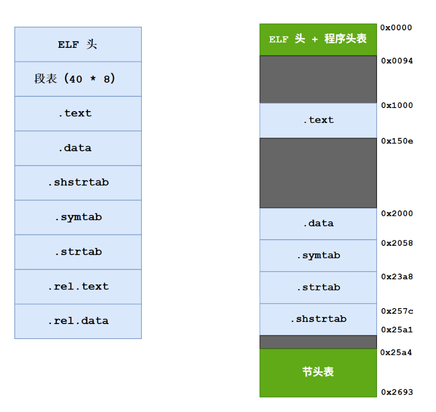
我们就参考右边的图组装可执行文件。
可执行文件和前面的 .o 一样，也用 my_elf_t 结构体。
1 | |
第 3 行，成员 exec_file 表示链接后的可执行文件；此成员仅用来组织文件内容，组织好后，我们再写入某个文件。
my_elf_t 结构体在上次生成 .o 的时候已经介绍了，我们复习一下：
1 | |
第 7~8 行的 2 个链表用不上。
其他字段已经讲解过了。
第 4 行，程序头表项的链表是新东西，后面会讲。
收集符号
为了构造符号表，需要收集所有 .o 的符号，加入到 sym_head 链表中。
另外，依然遵循先局部符号，再全局符号的顺序。
之前读取 elf 信息的时候，已经把符号表表项收集到了 elf->sym_head 链表中，请问这些符号表项可以直接为可执行文件所用吗？或者说是不是把每个 .o 的符号表合在一起，就是可执行文件的符号表？
答案是不能直接用，但是稍微改一下就可以用了。
我们逐一考察符号表表项的每个字段：
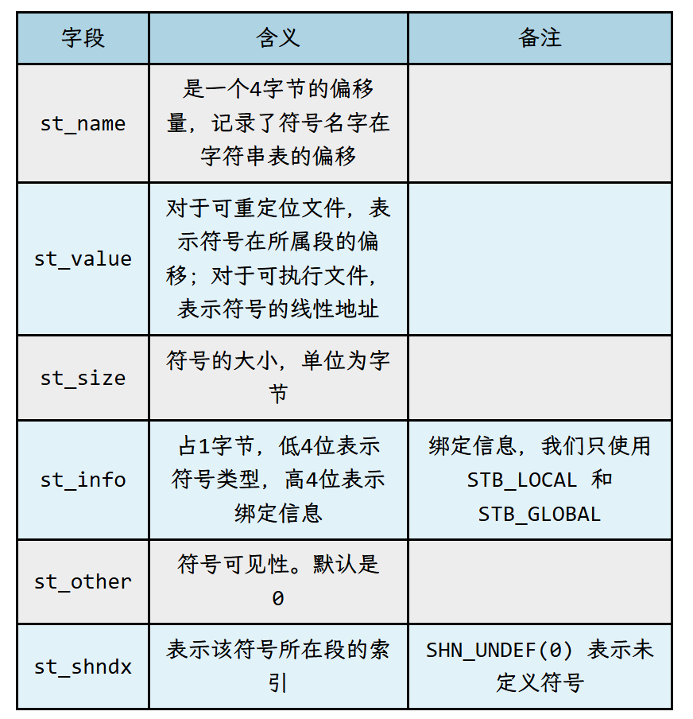
- st_name 需要改变，因为字符串表会重新构造;
- st_value 在符号地址解析的时候，已经修改为最终地址，无需修改;
- st_size 无需修改;
- st_info 无需修改;
- st_other 无需修改;
- st_shndx 可能需要修改。举个例子，某符号在 .data 节中定义，.data 节在 .o 中对应的节索引是 2；生成可执行文件后，.data 节被合并到了一个大的 .data 段，此 .data 段的索引是 1，所以需要把 2 改成 1；
- st_name 的值先写 0，在 __make_strtab 中会修正为正确的值。
所以我们只关注 st_shndx 的修改。代码如下：
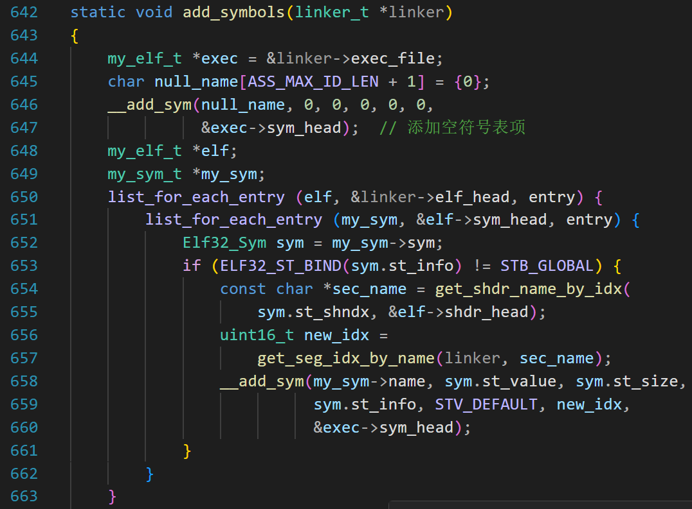
注意，空符号也属于局部符号；之前读取 elf 信息的时候，我们跳过了空的符号;
所以，第 646，添加一个空的符号表项;
第 650~651，遍历所有 .o 的符号表;
第 653，排除全局符号;
第 654~655，根据符号的 st_shndx 字段，获得符号所在的节;
第 656~657，根据节的名字获得新的节索引;
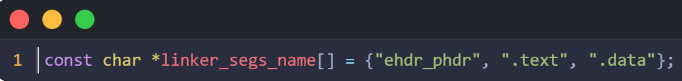
这里需要多说一下，节头表前 3 个表项是按照这个数组的顺序来的；
“ehdr_phdr” 起到占位的作用。所以 .text 的索引是 1， .data 节的索引是 2；
第 658~660，调用 __add_sym 函数，把符号加入 exec->sym_head 链表；
注意，倒数第二个参数，是 new_idx；
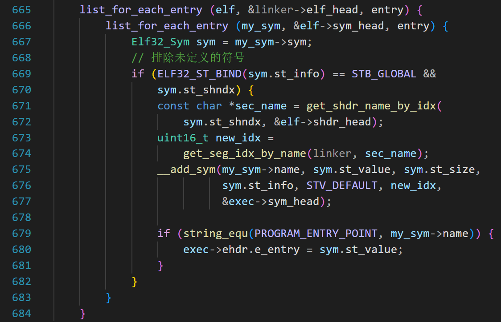
添加完局部符号后，添加全局符号。
之所以排除未定义的符号，有 2 个原因；
一是为了避免重复添加。例如 a.o 定义了 printf, b.o 和 c.o 都调用 printf 函数；如果不排除，就会添加 3 个 printf；
二是之前读取 elf 信息的时候，我们跳过了空的节头表项，所以当 sym.st_shndx 等于 0 的时候，get_shdr_name_by_idx 会返回 NULL；这很容易引发程序崩溃。
所以 sym.st_shndx 不能等于 0；
第 665~666 行，遍历所有 .o 的符号表;
第 669 行，找出导出符号;
第 671~677 行和前面的代码一样，不再赘述;
第 679 行，如果此符号是入口符号，则填写可执行文件的入口点;
构造代码节表项和数据节表项
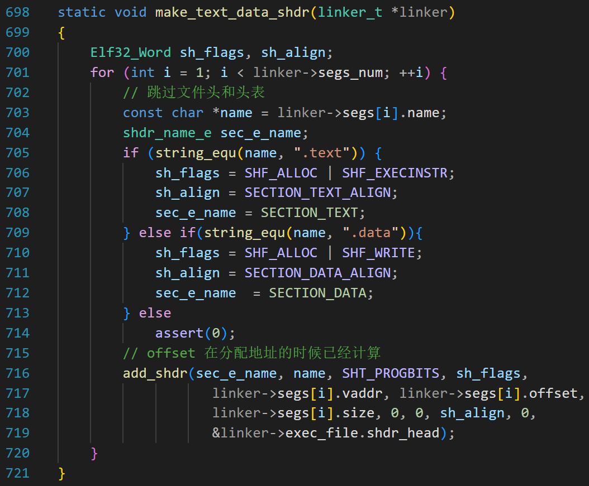
第 701 行，因为 segs[0] 是文件头和程序头表，所以我们从 1 开始循环;
第 705~713 行，根据段的名字，设置 sh_flags、sh_align 和 sec_e_name 字段;
第 716~719 行，调用 add_shdr 函数，添加节表项;
构造其他节表项
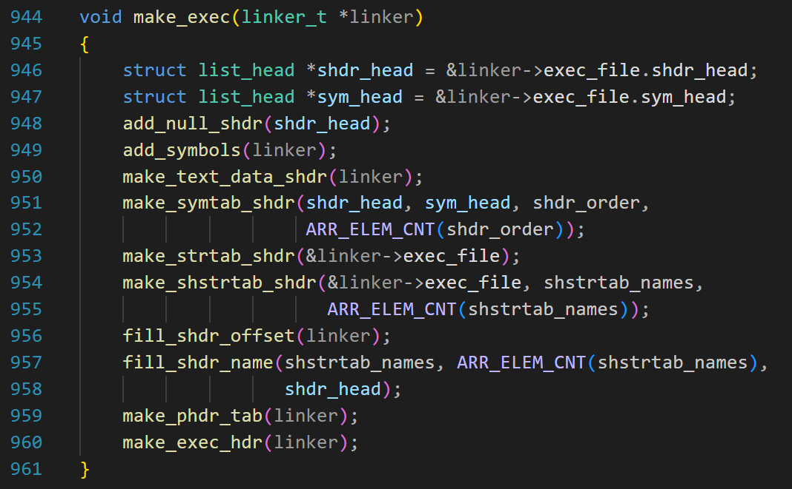
第 948 行，添加空的节表项到链表;
第 949 行，收集符号，前文已经讲过;
第 950 行，构造代码节表项和数据节表项，刚讲过;
第 951~954 行，构造符号表、字符串表、段表字符串表的节表项;
第 957 行，填写节表项中的 sh_name 字段;
这些函数在讲生成 .o 的时候已经讲过，这里不赘述。
填写sh_offset
虽然代码节和数据节的 sh_offset 已经确定，但是其他节（符号表、字符串表、段表字符串表）的 sh_offset 还没有填写。
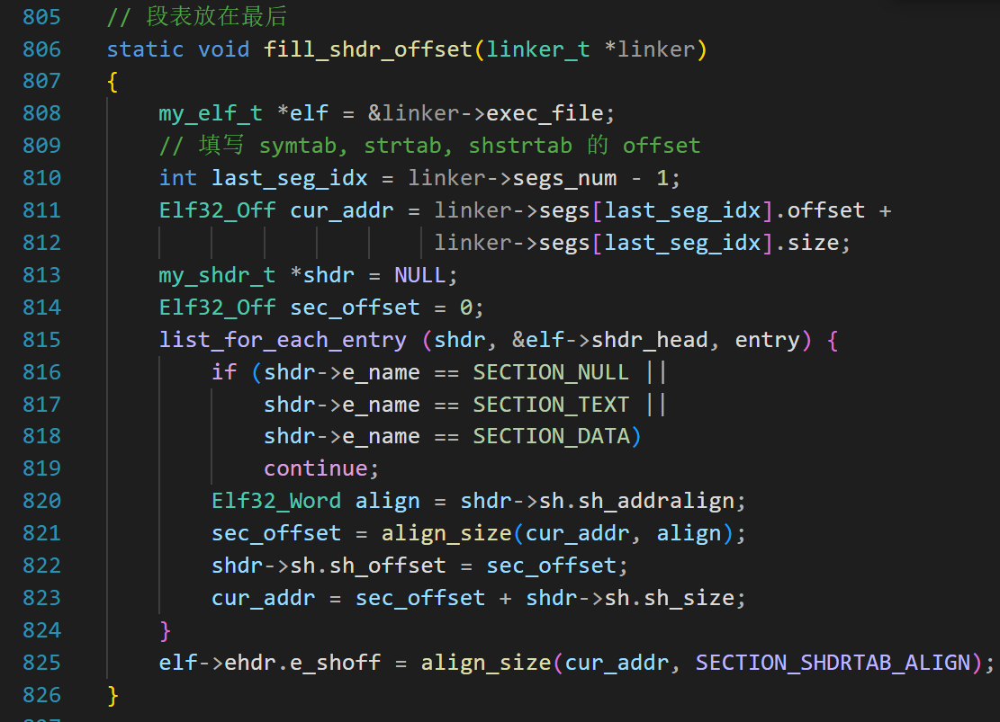
第 811~812 行，根据 segs[] 数组的最后一个节，计算此节的结束地址（cur_addr）;
第 815 行，遍历 exec_file 的节表项的链表，跳过空的节表项、.text 节表项、.data 节表项;
第 820 行，取出当前节表项的 sh_addralign 字段，根据要求对齐 cur_addr，对齐后的结果是 sec_offset, 这也当前节 sh_offset 的值;
第 823 行，想象把当前的节拼在已有节的后面，更新 cur_addr;
第 825 行，执行到这里说明所有的节拼接完成，就差节表了。把 cur_addr 对齐到 SECTION_SHDRTAB_ALIGN（4），填写文件头中的 e_shoff（节头表的偏移）。
构造程序头表
我们先复习一下头表项都有哪些字段。
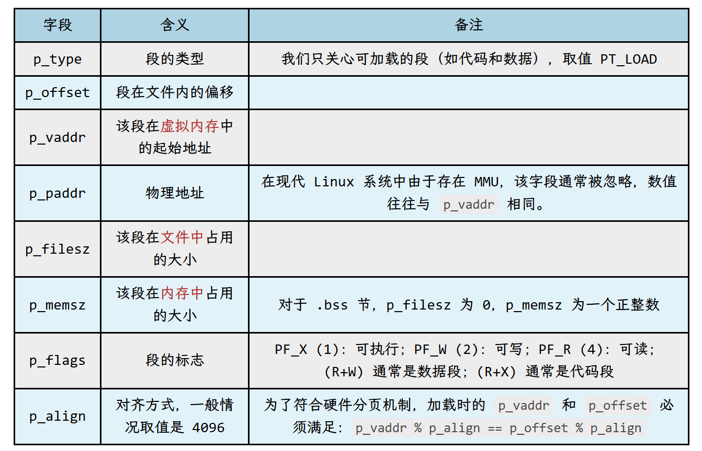
构造程序头表的代码是
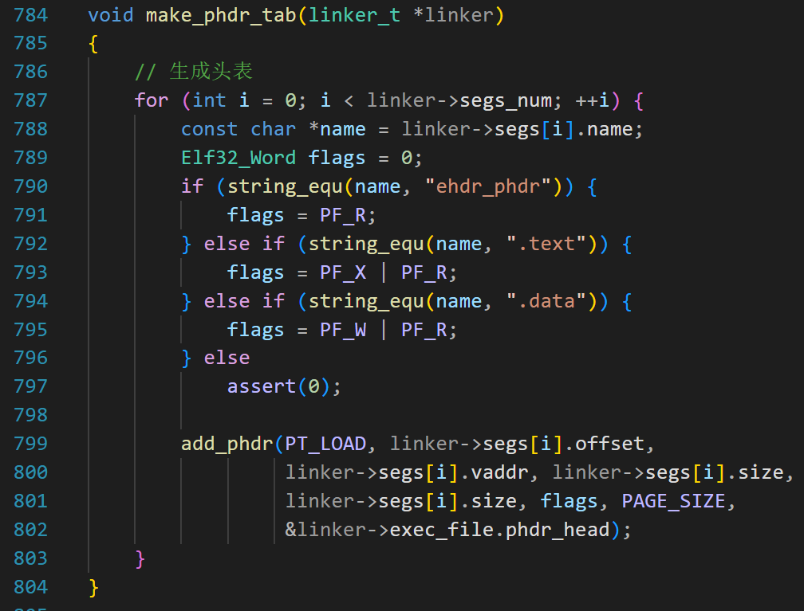
第 787 行，遍历 segs[] 数组；
第 790~795，根据段的名字填写 flags(表格中的 p_flags)；
第 799 行，添加程序头表项到 &linker->exec_file.phdr_head 链表。
add_phdr 函数很简单
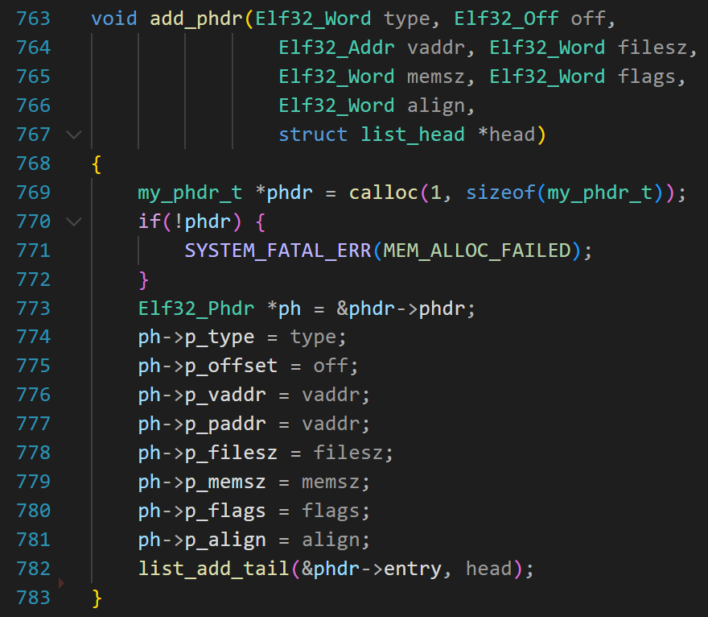
构造文件头
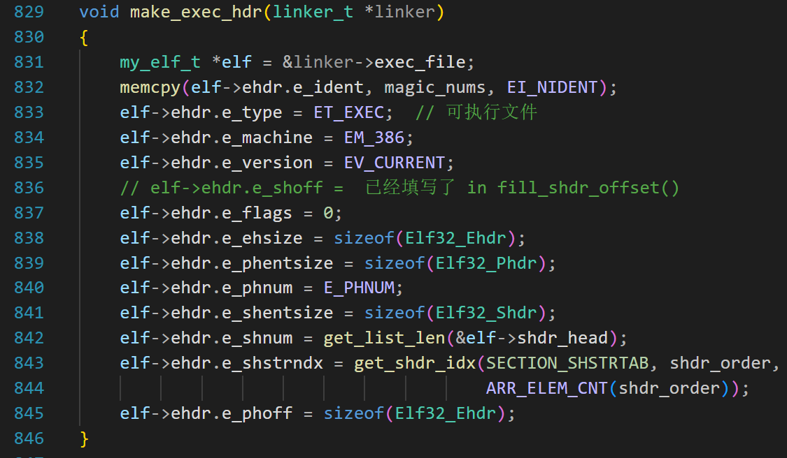
第 832 行，填写魔数，和之前的 .o 文件一模一样，不再赘述；
第 833 行，之前是 ET_REL，现在要写 ET_EXEC；
第 840 行，头表项的个数，这里是 3；
第 845 行，头表项的偏移，因为头表项紧跟在文件头的后面，所以偏移就是文件头的大小；
输出可执行文件
这是最后一个步骤。
在 UNIX 的早期（70年代），汇编器将生成的二进制文件默认命名为 a.out。由于早期的 C 编译器只是汇编器的包装器，它自然继承了这个默认命名。
如果用户没有指定文件名，我们就把生成的可执行文件叫 b.out 吧。
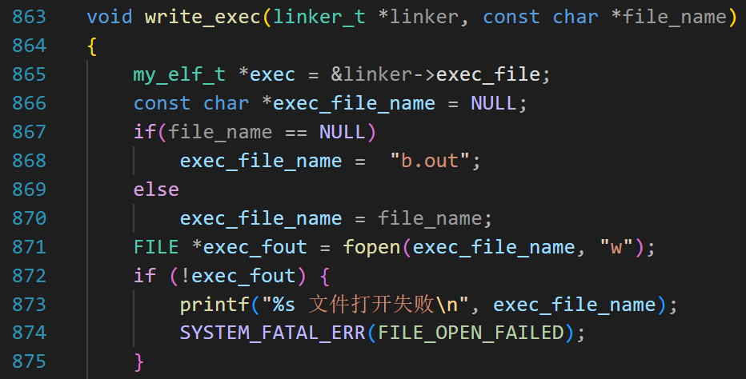
第 867 行，如果此函数传入的 file_name 是 NULL，则文件名是 “b.out”；
第 871 行，以写模式打开文件；
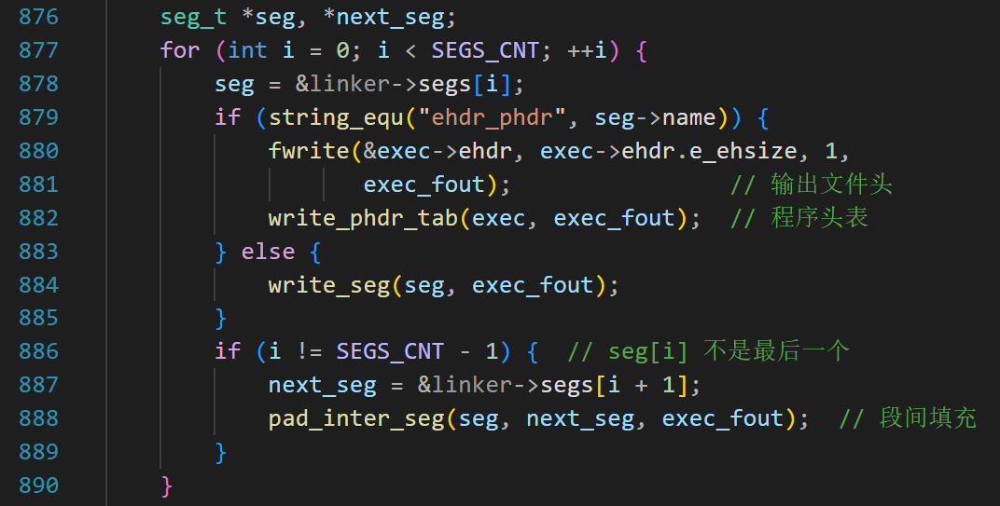
第 877，遍历数组 segs[]；
当 seg->name 等于 “ehdr_phdr”，说明是文件头和头表；
第 880 行写入文件头，第 882 行写入头表。
写入头表的代码是
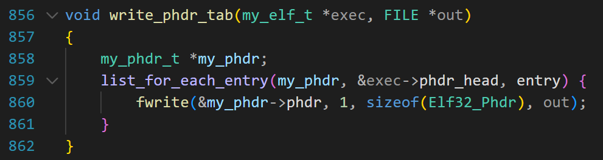
第 884 行，写入代码段和数据段；
第 888 行，段间填充。就是用下一个段的 offset 减去当前段的 （offset + size）,得到要填写多少字节，然后调用 __fill_zero();
write_seg 代码如下
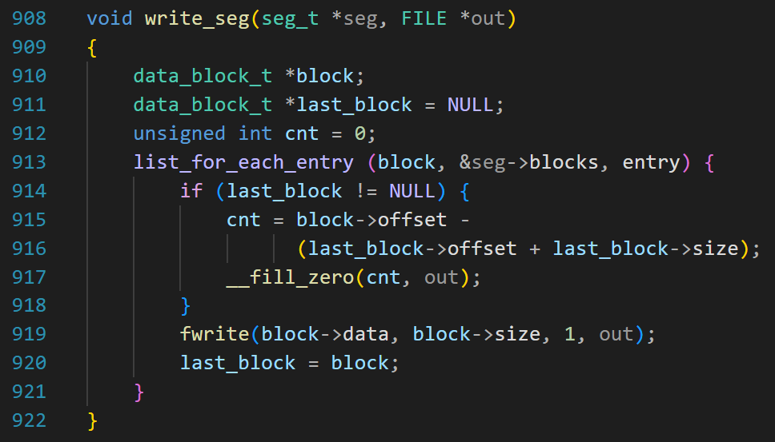
因为每个段都是多个 .o 的相同节拼接而成，节和节之间可能需要填充；
last_block 的初始值是 NULL，因为调用这个函数的时候，已经对齐到 4K 了，所以不用填充；
第 915~916，计算需要填充多少字节；
第 917 完成填充；
第 919，把这个 block 的数据写入可执行文件；
第 920，当前 block 成为 last_block；
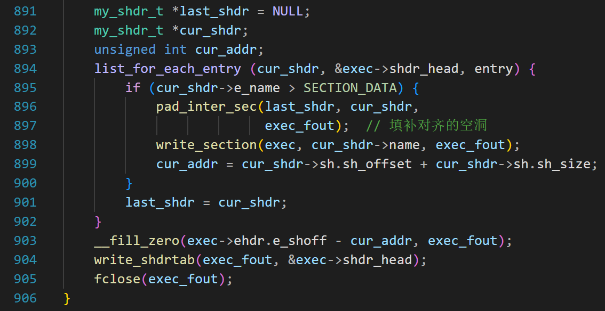
前面已经输出了文件头、头表、代码段和数据段，接下来输出符号表、字符串表，节头表字符串表。
第 894 行，遍历 shdr_head 链表，因为链表前三个节点是 SECTION_NULL,SECTION_TEXT,SECTION_DATA,所以前三次 if 条件不成立，但是第 901 行会执行；
第一次执行 896 行的时候，last_shdr 的值是 SECTION_DATA；
cur_shdr 的值是 SECTION_SYMTAB，也就是符号表；
第 896 行，填充 .data 和 .symtab 之间的空洞（如果有的话）；
第 898 行，输出 .symtab 节；
然后循环，输出其他节。
第 899 行，计算 cur_addr,计算这个值是因为我们需要知道最后一个节的结尾处对应的文件偏移；
第 903 行，e_shoff（节头表的偏移） 减去最后一个节的结束位置就是缝隙的大小，并填充它。
第 904 行，输出节头表。
至此，可执行文件就生成了。
恭喜读者学习到这里！